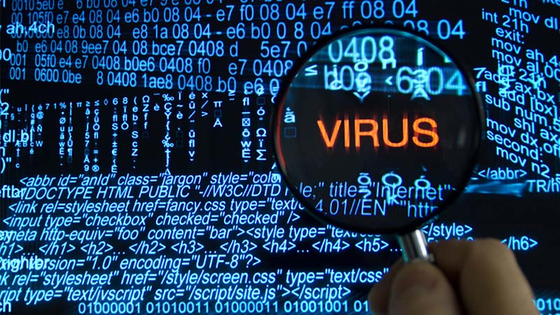
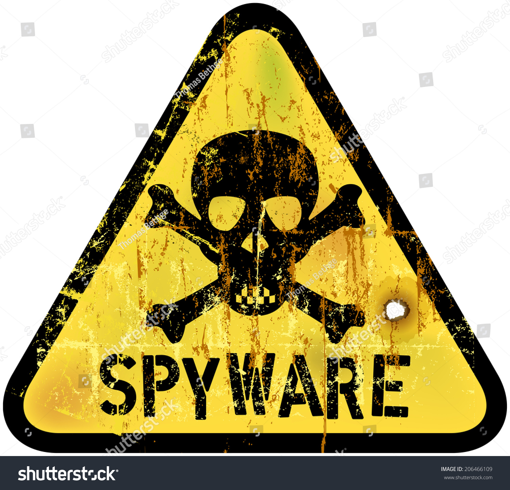

Un ciberataque es el intento deliberado y malicioso de tener acceso, sin autorización,
a los sistemas de información de una persona u organización. La intención va desde espiar los hábitos de navegación
de la víctima y robar información valiosa e incluso dinero, hasta bloquear el acceso a los datos mediante encriptación para exigir un rescate
Tengamos en cuenta que muchas pequeñas empresas gestionan datos de sus clientes y de compañías grandes de las que son proveedores.
Conoce aquí algunos de los tipos de ciberataques más comunes para prevenirlos debidamente.
Los tipos de ciberataques por malware más conocidos
Un malware es capaz de extraer información del usuario recuperando datos del disco duro y denegando el acceso a los componentes
fundamentales de la red. Incluso, podría interrumpir o inutilizar el sistema. Como dijimos,
los malware son muy variados y cumplen diversas tareas. Entre los más comunes encontramos:
Virus: necesitan de la intervención del usuario para propagarse.
Los virus están alojados en archivos o programas que al ser ejecutados infectan el terminal.

RANSOMWARE: Dicho malware deniega el acceso a los datos del usuario víctima mediante un código cifrado. De esta forma,
el atacante lo extorsiona bajo amenaza de publicación o borrado de la información, a menos que pague un rescate.
Troyanos: Tienen esta denominación aquellos que están ocultos dentro de programas útiles. No se replican a sí mismos como los virus y los hackers
suelen emplearlos para establecer una «puerta trasera» para ingresar a los sistemas.
De allí, su nombre que refiere a la leyenda griega del Caballo de Troya
Spyware: Es un programa instalado que recolecta información sobre los usuarios, sus sistemas o hábitos de navegación.
Esta información llega a un usuario remoto que emplea la información con el objetivo de chantajear a la víctima o instalar otros programas a través de la web.

¿Como podemos evitar estos ciberataques?
Los ataques ocurren cada vez más, pero la buena noticia es que hay formas de prevenirlos, aquí te compartimos una serie de
pasos que, además de ayudarte, permiten generar una cultura de ciberseguridad:
1. No permitir que nadie que no sea explícitamente invitado entre al sistema. Esto se logrará mediante:
Proteger las computadoras, usando antimalware y aplicando actualizaciones.
Usar sólo software aprobado por la compañía.
2. Conciencia personal
Mucho cuidado con los correos electrónicos que recibes.
Cuida mucho cualquier clic a un enlace o descarga de archivos.
3. Utiliza buenas contraseñas
A la hora de usar contraseñas, es mejor utilizar variantes que sean siempre distintas y con numerosos caracteres.
Si son largas y tienen letras minúsculas, mayúsculas, números y caracteres especiales, mucho mejor.
No utilices nunca contraseñas en texto plano
4. Copia de seguridad
Es importantísimo que hagas una copia de seguridad para respaldar tu información. De esta forma, si sufrimos un ataque
y tenemos que hacer un barrido de los datos, tendremos la posibilidad de recuperar dichos datos cuando lo necesitemos.
Hay que tener en cuenta que a pesar de lo grande o pequeña que sea nuestra empresa tenemos que tener precausion y estar preparados
para cuando presentes un ciberataque. Por ello he dejado aca un video donde explica algunos clips sobre como proteger tu PC de estos Virus
Haz click aqui para ver el video.